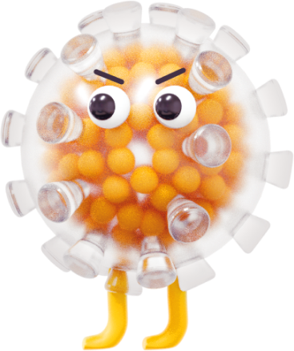
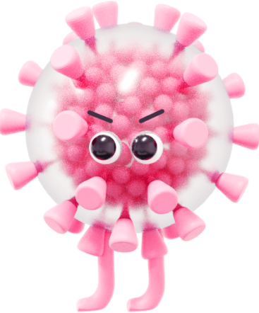
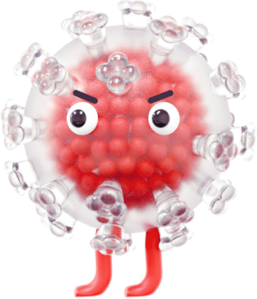
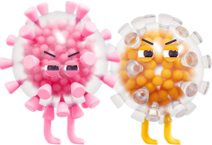

Вакцина против кори, паротита и краснухи, живая
Скролльте внизСодержание статьи
Корь
Корь является крайне заразной тяжелой болезнью вирусного происхождения. До введения противокоревой вакцины в 1963 году и широкого распространения вакцинации, крупные эпидемии кори происходили каждые 2–3 года, ежегодно насчитывалось 2,6 миллиона случаев смерти от кори.
По оценкам, в 2017 г. от кори умерло 110 000 человек, большинство из которых дети в возрасте до пяти лет, несмотря на наличие безопасной и эффективной вакцины от этого заболевания.1 Корь является одной из самых заразных болезней в мире.
Вирус кори распространяется при кашле и чихании, тесных личных контактах или непосредственном контакте с инфицированными выделениями из носоглотки.1
Эпидемический паротит
Эпидемический паротит — это инфекция, вызванная вирусом и распространяющаяся от человека к человеку при прямом контакте или воздушно-капельным путем. Иногда ее называют эпидемическим паротитом или свинкой, и она поражает главным образом слюнные железы. Первые симптомы, как правило, неспецифичны, например: головная боль, недомогание и лихорадка, сопровождающиеся в течение дня характерным набуханием околоушной (слюнной) железы.2
Эпидемический паротит — это в основном детское заболевание, наиболее часто поражающее детей в возрасте от 5 до 9 лет. Тем не менее вирус эпидемического паротита может поражать взрослых с возможными осложнениями, которые, вероятно, будут тяжелыми.
Осложнения эпидемического паротита могут включать менингит (до 15% случаев), орхит и глухоту. Очень редко эпидемический паротит может привести к энцефалиту и хроническому неврологическому заболеванию.2
Краснуха
Краснуха передается воздушно-капельным путем, когда инфицированные люди чихают или кашляют. Это острое, обычно мягкое вирусное заболевание, традиционно затрагивающее восприимчивых детей и молодых людей во всем мире.
Инфицирование краснухой незадолго до зачатия и на ранних сроках беременности может привести к выкидышу, внутриутробной смерти или врожденным дефектам, известным как синдром врожденной краснухи (СВК).
Самый высокий риск СВК отмечается в странах с высоким уровнем восприимчивости к краснухе среди женщин детородного возраста.3
Комбинированная вакцина М-М-Р II® для профилактики кори, краснухи и эпидемического паротита
-
Вакцинный штамм вируса кори – Edmonston (Enders’), выращенный в культуре клеток куриного эмбриона
не менее 1 000 ТЦД504 -
Вакцинный штамм вируса эпидемического паротита – Jeryl Lynn™ (уровень В), выращенный в культуре клеток куриного эмбриона
не менее 12 500 ТЦД504 -
Вакцинный штамм краснухи – Wistar RA 27/3, выращенный в культуре диплоидных клеток легочных фибробластов человека (WI 38)
не менее 1 000 ТЦД504
Иммуногенность вакцины М-М-Р II®
Клинические исследования с участием 284 детей в возрасте от 11 месяцев до 7 лет, серонегативных к трем вирусам, показали, что вакцина М-М-Р II® является высокоиммуногенной и обычно хорошо переносится. В этих исследованиях одна доза вакцины индуцировала выработку:
-
95%
противокоревых антител (анализ с помощью реакции торможения гемагглютинации — РТГА) в 95% случаев
-
96%
противопаротитных нейтрализующих антител в 96% случаев
-
99%
противокраснушных антител (РТГА) в 99% случаев
-
1-5%
Однако у небольшого числа вакцинированных лиц (1–5%) после введения первой дозы сероконверсия может не произойти.4
Клиническая эффективность вакцинации препаратом М-М-Р II®
-
после
1-й дозы после
2-й дозы -
Штамм Edmonston
(Enders’)
после
1-й дозы93%5после
2-й дозы97%5 -
Штамм Jeryl Lynn™
(пассажный уровень B)
после
1-й дозы78%5после
2-й дозы88%5 -
Штамм Wistar 27/3
Высокая эффективность
после
1-й дозы95%5после
2-й дозы100%5
Вакцинация
- Вакцина М-М-Р II® применяется с возраста 12 мес и далее без ограничения по возрасту.4
- Вакцина вводится подкожно.4
- Нет противопоказания для применения вакцин КПК среди лиц с иммунитетом к одному их антигену или более.4 8
Календарь прививок
Согласно национальному календарю профилактических прививок РФ, вакцинация против кори, краснухи и эпидемического паротита проводится всем детям в возрасте 12 мес с ревакцинацией в возрасте 6 лет.9
Вакцинация по эпидемическим показания
-
По эпидемическим показаниям вакцинации против кори дополнительно подлежат:
дети от 1 года до 18 лет и взрослые до 35 лет, не болевшие, не привитые, привитые однократно, не имеющие сведений о прививках против кори;
взрослые от 36 до 55 лет включительно, относящиеся к группам риска (работники медицинских и образовательных организаций, организаций торговли, транспорта, коммунальной и социальной сферы), а также лица, работающие вахтовым методом, и сотрудники государственных контрольных органов в пунктах пропуска через государственную границу Российской Федерации), не болевшие, не привитые, привитые однократно, не имеющие сведений о прививках против кори.9 -
Против эпидемического паротита:
контактные лица из очагов заболевания, не болевшие, не привитые и не имеющие сведений о профилактических прививках против эпидемического паротита.
-
Против краснухи:
дети от 1 года до 18 лет (включительно), женщины от 18 до 25 лет (включительно), не болевшие, не привитые, привитые однократно против краснухи, не имеющие сведений о прививках против краснухи.9
Постконтактная профилактика
-
Постконтактная профилактика кори
Иммунизации против кори по эпидемическим показаниям подлежат лица, имевшие контакт с больным (при подозрении на заболевание), не болевшие корью ранее, не привитые, не имеющие сведений о прививках против кори, а также лица, привитые против кори однократно – без ограничения возраста.10
Вакцинация лиц, находящихся в контакте с пациентом с корью, может обеспечить определенную защиту в случае, если вакцина введена в первые 72 ч после контакта. Если вакцина была введена за несколько дней до заражения, то в этом случае будет достигнут высокий профилактический эффект. Окончательные данные об эффективности вакцинации лиц, контактировавших с пациентом с паротитом и краснухой, отсутствуют.4 -
Постконтактная профилактика эпидемического паротита
Иммунизации против эпидемического паротита по эпидемическим показаниям подлежат лица, имевшие контакт с больным (при подозрении на заболевание), не болевшие эпидемическим паротитом ранее, не привитые или не имеющие сведений о прививках против эпидемического паротита. Иммунизация против эпидемического паротита по эпидемическим показаниям проводится в течение 7 дней с момента выявления первого больного в очаге.10
Применение с другими вакцинами
-

- Вакцину М М Р II® следует назначать за 1 месяц до или через 1 месяц после введения других живых вирусных вакцин.4
- Вакцину М М Р II® применяли одновременно с конъюгированной инактивированной вакциной против гемофильной инфекции типа b (Haemophilus influenza type b) и живой аттенуированной вакциной против ветряной оспы, при этом вакцины вводились разными шприцами в разные участки тела. Не было обнаружено нарушений иммунного ответа на вводимые антигены, а характер, частота и выраженность побочных реакций были сходными с таковыми при введении вакцин по отдельности.4 Применение АКДС (вакцина против коклюша, дифтерии и столбняка) и/или ОПВ (вакцины оральной полиомиелитной) одновременно с вакциной против кори, паротита и краснухи не рекомендуется в связи с ограниченными данными по результатам их одновременного введения.4
- Также использовались иные схемы иммунизации. Данные опубликованных исследований, касающиеся одновременного введения рекомендованных вакцин для плановой иммунизации (например, АКДС [или АаКДС], ИПВ [или ОПВ], вакцины против гемофильной инфекции типа b с/или без вакцины для профилактики гепатита В, и вакцины против ветряной оспы) с другими педиатрическими вакцинами (живыми, аттенуированными или инактивированными), не выявили какого либо взаимодействия между ними.4
Источники информации
-
1
Корь. Основные факты. ВОЗ.
www.who.int/ru/news-room/fact-sheets/detail/measlesДоступ осуществлен 26.11.2020 -
2
Эпидемический паротит. ВОЗ.
www.who.int/immunization/diseases/mumps/ru/Доступ осуществлен 26.11.2020 -
3
Краснуха. ВОЗ.
www.who.int/immunization/diseases/rubella/ru/Доступ осуществлен 26.11.2020 -
4
М-М-Р II®. Инструкция по применению лекарственного препарата для медицинского применения. Регистрационный номер П N013153/01.
-
5
Vaccines and preventable diseases. Centers for Disease Control and Prevention Web site.
www.cdc.gov/vaccines/vpd/mmr/hcp/about.htmlДоступ осуществлен 26.11.2020 -
6
Epidemiology and prevention of vaccine-preventable diseases. Centers for Disease Control and Prevention Web site.
www.cdc.gov/vaccines/pubs/pinkbook/mumps.htmlДоступ осуществлен 26.11.2020 -
7
Rubella. World Health Organization Web site.
www.who.int/ith/vaccines/rubella/en/Доступ осуществлен 26.11.2020 -
8
Вакцины против краснухи: документ по позиции ВОЗ. Еженедельный эпидемиологический бюллетень. № 29, 2011, 86, 301-316.
-
9
Об утверждении национального календаря профилактических прививок и календаря профилактических прививок по эпидемическим показаниям: Приказ Министерства здравоохранения Российской Федерации (Минздрав России) от 21 марта 2014 г. N 125н.
-
10
СП 3.1.2952-11. Профилактика кори, краснухи и эпидемического паротита: Санитарные правила. – М.: Федеральный центр гигиены и эпидемиологии Роспотребнадзора, 2012. – 23 с.
Ключевая информация по безопасности
- Название препарата: М-М-Р II®
- Группировочное название: вакцина для профилактики кори, краснухи и паротита
- Противопоказания: гиперчувствительность к любому компоненту вакцины; беременность; анафилактические и анафилактоидные реакции на неомицин (каждая доза восстановленного раствора вакцины содержит около 25 мкг неомицина); лихорадочные заболевания дыхательной системы или другие острые инфекции, сопровождающиеся лихорадкой; острый нелеченый туберкулез; пациенты получающие иммуносупрессивную терапию. Данное противопоказание не распространяется на пациентов, получающих заместительную терапию кортикостероидами, например, по поводу Аддисоновой болезни; болезни крови, лейкозы, лимфомы всех типов, другие злокачественные новообразования, поражающие костный мозг или лимфатическую систему; первичные и вторичные иммунодефициты, включая пациентов с иммуносупрессией в результате СПИДа или с другими клиническими проявлениями инфицирования вирусом иммунодефицита человека; нарушения клеточного иммунитета; гипогаммаглобулинемия и дисгаммаглобулинемия. Имеются сообщения, что у лиц с тяжелым состоянием иммунодефицита непреднамеренное введение коревой вакцины приводило к коревому энцефалиту (с включением телец), пневмониту или летальному исходу; наличие врожденных или наследственных иммунодефицитов у родственников (до тех пор, пока не будет доказана достаточная иммунокомпетентность пациента); анафилактические или анафилактоидные реакции на куриные яйца в анамнезе.
- С осторожностью: c особой осторожностью вакцину М-М-Р II® следует вводить лицам, у которых в анамнезе наблюдались судороги (в том числе у родственников), повреждение ткани головного мозга и любые другие состояния, когда необходимо избегать воздействий, связанных с лихорадкой. В случае повышения температуры тела после вакцинации необходимо вызвать врача (см. раздел «побочное действие»). У лиц с наличием тромбоцитопении после вакцинации может развиться более тяжелая форма тромбоцитопении. Кроме того, у лиц, перенесших тромбоцитопению после первой вакцинации М-М-Р II® (или вакциной, входящей в ее состав), тромбоцитопения может развиться и при введении последующих доз. В последнем случае для определения необходимости повторной вакцинации следует провести серологическую оценку специфического иммунитета. В подобных случаях перед вакцинацией необходимо тщательно оценить соотношение потенциального риска и пользы (см. раздел «побочное действие»). Дети и подростки, инфицированные вирусом иммунодефицита человека и не имеющие признаков иммуносупрессии, могут быть вакцинированы. Однако иммунизация у них может быть менее эффективной, чем у неинфицированных лиц и данных пациентов следует тщательно наблюдать по поводу развития кори, паротита и краснухи (см. раздел «противопоказания»).
- Особые указания: как любая вакцина, М-М-Р II® может не обеспечить защиту от заболевания у 100% вакцинированных. Учитывая возможность анафилактических и анафилактоидных реакций, следует иметь в наличии необходимые средства их лечения, включая адреналин для инъекций (1:1000). Вакцину необходимо хранить в защищенном от света месте, поскольку свет может инактивировать вирусы. Восстановленную вакцину необходимо использовать как можно раньше после растворения. У большинства восприимчивых лиц наблюдается выделение небольших количеств живого аттенуированного вируса краснухи через нос или глотку в период с 7-й по 28-й день после вакцинации. Достоверные данные о том, что данный вирус может передаваться восприимчивым лицам, находящимся в контакте с вакцинированным лицом, отсутствуют. Таким образом, риск заражения при тесном личном контакте не является значительным, хотя теоретически заражение возможно. Однако имеются подтверждения передачи вакцинного вируса краснухи детям через грудное молоко (см. раздел «применение при беременности и в период грудного вскармливания»). Сообщения о передаче аттенуированного живого вируса кори или паротита от вакцинированных восприимчивым лицам отсутствуют. Имеются сообщения о том, что живые вакцины против кори, паротита и краснухи, введенные раздельно, могут привести к временному снижению туберкулиновой чувствительности кожи. Следовательно, если необходимо провести туберкулиновый тест, он должен быть сделан либо до, либо одновременно с вакцинацией препаратом М-М-Р II®. У детей, находящихся на лечении по поводу туберкулеза, не наблюдалось обострения заболевания при иммунизации живой коревой вакциной. Сообщения об исследованиях влияния живой коревой вакцины на детей с нелеченым туберкулезом отсутствуют. Консультируя женщину, которая была случайно вакцинирована во время беременности или забеременела в течение 3 мес. после вакцинации, врач должен учитывать следующие факты: 1) в 10-летнем исследовании более 700 беременных женщин, вакцинированных против краснухи в течение З мес. до или после зачатия (189 из них получали штамм Wistar RA 27/3), ни у одного из новорожденных не выявлено врожденных пороков, характерных для синдрома врожденной краснухи; 2) паротитная инфекция во время первого триместра беременности может повысить риск спонтанного аборта. Хотя было показано, что вакцинный вирус паротита инфицирует плаценту и плод, данные о том, что он может вызывать врожденные пороки у человека, отсутствуют; 3) имеются сообщения о том, что естественное заражение корью во время беременности повышает риск для плода. Увеличение частоты спонтанных абортов, мертворождений, врожденных дефектов и преждевременных родов наблюдалось при заболевании диким штаммом вируса кори во время беременности. Адекватные исследования по влиянию аттенуированного вакцинного штамма вируса кори на беременность не проводились, однако оправдано предположение о том, что вакцинный штамм вируса кори также способен оказывать повреждающее действие на плод. Живая коревая вакцина и живая вакцина против паротита выращены в культуре клеток куриного эмбриона. Лица, у которых в анамнезе присутствуют анафилактические, анафилактоидные и другие реакции гиперчувствительности немедленного типа (например, крапивница, отек слизистой рта и глотки, затруднение дыхания, артериальная гипотония или шок) после употребления куриных яиц, имеют повышенный риск развития реакции гиперчувствительности немедленного типа после введения вакцины, содержащей следы антигенов куриного эмбриона. В подобных случаях перед вакцинацией необходимо тщательно оценить соотношение потенциального риска и пользы. Таких пациентов следует вакцинировать в исключительных случаях, имея в наличии все средства, необходимые в случае возникновения аллергической реакции.
- Влияние на способность управлять транспортными средствами и работать с механизмами: Исследований влияния вакцины М-М-Р II® на способность управлять транспортными средствами, а также работать с механизмами не проводилось.
- Побочное действие: общие расстройства: панникулит; атипичные формы кори; лихорадка; обморок; головная боль; головокружение; недомогание; раздражительность. Нарушения со стороны сосудов: васкулит. Нарушения со стороны желудочно-кишечного тракта: панкреатит; диарея; рвота; паротит; тошнота. Эндокринная система: сахарный диабет. Нарушения со стороны крови и лимфатической системы: тромбоцитопения (см. раздел «с осторожностью»); пурпура; региональная лимфаденопатия; лейкоцитоз. Нарушения со стороны иммунной системы: сообщалось об анафилактических и анафилактоидных реакциях, а также о связанных с ними явлениях, таких как ангионевротический отек (включая периферические отеки или отек лица) и бронхоспазм у лиц с аллергией или без аллергии в анамнезе. Нарушения со стороны скелетно- мышечной и соединительной ткани: артралгия и/или артрит (см. ниже); миалгия. Артралгия и/или артрит: артралгия и/или артрит (обычно транзиторные и редко хронические), а также полиневрит являются характерными симптомами при инфицировании диким типом краснухи и варьируются по частоте и тяжести в зависимости от возраста и пола. Наиболее выраженными они бывают у взрослых женщин, а наименее выражены у детей в препубертатном возрасте. Хронический артрит сочетается с инфицированием диким типом краснухи и связан с персистенцией вирусов и/или вирусных антигенов, определяемых в тканях тела. У вакцинированных лиц хронические симптомы со стороны суставов развиваются редко. У детей реакции со стороны суставов после вакцинации встречаются редко и являются кратковременными. У женщин частота артрита и артралгии обычно выше, чем у детей (женщины: 12-26%; дети: 0-3%), а реакции, как правило, более выражены и более длительны. Симптомы могут персистировать в течение нескольких месяцев и в редких случаях в течение нескольких лет. У девочек-подростков реакции со стороны суставов бывают чаще, чем у детей, но реже, чем у взрослых женщин. Даже у женщин старше 35 лет эти реакции в целом хорошо переносятся и редко влияют на качество жизни. Нарушения со стороны нервной системы: энцефалит; энцефалопатия (см. ниже); коревой энцефалит (с включением телец) (см. раздел «противопоказания»); подострый, склерозирующий панэнцефалит (ПСПЭ); синдром Гийена-Барре; острый диссеминированный энцефаломиелит, поперечный миелит, фебрильные судороги; судороги без лихорадки или судорожные припадки; атаксия; полиневрит; полинейропатия; паралич зрительного нерва; парестезии. Подострый склерозирующий панэнцефалит (ПСПЭ): сообщалось о развитии ПСПЭ у детей с отсутствием данных об инфицировании диким штаммом вируса кори в анамнезе, но получавших вакцинацию против кори. Некоторые из этих случаев моглибыть вызваны недиагностированной инфекцией в первый год жизни или, возможно, вакцинацией против кори. Национальные расчеты о распространенности вакцинации против кори показывают, что связь между ПСПЭ и вакцинацией против кори соответствует соотношению 1 случай на миллион распространенных доз. Это значительно меньше частоты развития ПСПЭ при заболевании корью, вызванной диким штаммом вируса, которая составляет 6-22 случая на миллион случаев кори. Результаты ретроспективного случай-контроль исследования, проведенного Центром по Контролю и Профилактике Заболеваний США, позволяют предположить, что вакцинация защищает от развития ПСПЭ путем предотвращения заболевания корью, которая характеризуется высоким риском развития ПСПЭ. Асептический менингит: сообщалось о развитии асептического менингита после использования вакцины против кори, паротита и краснухи. Хотя была продемонстрирована причинная связь между штаммом паротита Urabe и асептическим менингитом, нет данных, которые бы свидетельствовали о существовании связи между штаммом паротита Jeryl Lynn ™ и асептическим менингитом. Энцефалит/энцефалопатия: на каждые 3 миллиона доз вакцины для профилактики кори, краснухи и паротита, произведенной компанией Мерк Шарп и Доум, приходился примерно один случай энцефалита/энцефалопатии. Пострегистрационное наблюдение, продолжающееся с 1978 г., свидетельствует о том, что о серьезных нежелательных явлениях, таких как энцефалит/энцефалопатия, по-прежнему сообщается редко. Риск возникновения таких серьезных неврологических заболеваний после введения живой вирусной вакцины для профилактики кори остается намного меньшим, чем риск возникновения энцефалита/энцефалопатии после перенесенного заболевания диким типом вируса кори (один на тысячу случаев заболевания). У лиц с тяжелым иммунодефицитом, непреднамеренно привитых коревой вакциной, регистрировались случаи коревого энцефалита с тельцами – включениями, пневмонита и случаи летального исхода как прямого следствия диссеминированной инфекции, вызванной вакцинным вирусом (см. раздел «противопоказания»); также сообщалось о диссеминированной инфекции, вызванной вакцинными вирусами паротита и краснухи. Нарушения со стороны дыхательной системы, органов грудной клетки и средостения: пневмония; пневмонит (см. раздел «противопоказания»); боль в горле; кашель; ринит. Нарушения со стороны кожи и подкожных тканей: синдром Стивенса - Джонсона; многоформная эритема; крапивница; сыпь; сыпь, напоминающая коревую; зуд. Местные реакции, включающие чувство жжения и/или покалывания в месте инъекции; волдыри или гиперемию в месте введения; покраснение (эритему); отек; уплотнение; болезненность; образование везикул в месте введения, пурпуру Шенлейна- Геноха, острый геморрагический отек у детей грудного возраста. Нарушения со стороны органа слуха и лабиринтные нарушения: нейросенсорная потеря слуха; средний отит. Нарушения со стороны органа зрения: ретинит; невриты зрительного нерва; папиллит; ретробульбарный неврит; конъюнктивит. Мочеполовая система: эпидидимит; орхит. Прочие: редко сообщалось о смерти по разным, порой неизвестным, причинам, последовавшей после введения вакцины против кори, паротита и краснухи; тем не менее, среди здоровых лиц не была установлена причинно- следственная связь (см. раздел «противопоказания»). В опубликованном пострегистрационном исследовании, проведенном в Финляндии и охватившем 1,5 миллиона детей и взрослых, получивших вакцинацию препаратом М-М-Р II® в период с 1982 по 1993 гг., отсутствуют сообщения о летальных исходах или длительных осложнениях.
- Клинически значимые лекарственные взаимодействия: введение иммуноглобулинов совместно с вакциной М-М-Р II® может нарушить ожидаемый иммунный ответ. Вакцинацию следует отложить на 3 месяца или провести за 4 недели до введения иммуноглобулинов человека, а также переливания крови или плазмы. Применение с другими вакцинами: Вакцину М-М-Р II® следует назначать за 1 месяц до или через 1 месяц после введения других живых вирусных вакцин. Вакцину М-М-Р II® применяли одновременно с конъюгированной инактивированной вакциной против гемофильной инфекции типа b ( Haemophilus influenza type b ) и живой аттенуированной вакциной против ветряной оспы, при этом вакцины вводились разными шприцами в разные участки тела. Не было обнаружено нарушений иммунного ответа на вводимые антигены, а характер, частота и выраженность побочных реакций были сходными с таковыми при введении вакцин по отдельности. Применение АКДС (вакцина против коклюша, дифтерии и столбняка) и/или ОПВ (вакцины оральной полиомиелитной) одновременно с вакциной против кори, паротита и краснухи не рекомендуется в связи с ограниченными данными по результатам их одновременного введения. Также использовались иные схемы иммунизации. Данные опубликованных исследований, касающиеся одновременного введения рекомендованных вакцин для плановой иммунизации (например, АКДС [или АаКДС], ИПВ [или ОПВ], вакцины против гемофильной инфекции типа b с/или без вакцины для профилактики гепатита В, и вакцины против ветряной оспы) с другими педиатрическими вакцинами (живыми, аттенуированными или инактивированными) не выявили какого-либо взаимодействия между ними. Клинически значимая информация по применению у особых групп населения: Женщины детородного возраста: иммунизация небеременных неимунных девушек и женщин детородного возраста живой аттенуированной вакциной против краснухи, кори и паротита показана при соблюдении определенных мер предосторожности (см. раздел «применение при беременности и в период грудного вскармливания»). Вакцинация неиммунных женщин детородного возраста защищает их от заболевания краснухой во время беременности, что в свою очередь предотвращает инфицирование плода и развитие у него поражений, обусловленных врожденной краснухой. Женщинам детородного возраста рекомендуется предохраняться от беременности в течение 3 месяцев после вакцинации. Их следует проинформировать о причинах подобных мер предосторожности (см. раздел «применение при беременности и в период грудного вскармливания»). Проведение серологических исследований женщин детородного возраста с целью определения их восприимчивости к краснухе с последующей прививкой серонегативных лиц является желательным, но не обязательным. Женщин детородного возраста следует проинформировать о высокой вероятности развития через 2-4 недели после прививки обычно преходящих артралгий или артритов (см. раздел «побочное действие»). Женщины в послеродовом периоде: во многих случаях оправдана вакцинация женщин, восприимчивых к краснухе, сразу после родов (см. раздел «применение при беременности и в период грудного вскармливания»). Другие группы населения: непривитые и не болевшие краснухой дети старше 12 месяцев, находящиеся в контакте с восприимчивой беременной женщиной, должны быть привиты против краснухи (моновалентной краснушной вакциной или вакциной М-М-Р II®) для снижения риска возможного заражения беременной женщины. Вакцинация рекомендована также для восприимчивых лиц из групп высокого риска, таких как учащиеся, медицинские работники, военнослужащие. Неиммунные лица в период пребывания за границей могут инфицироваться вирусами кори, паротита и краснухи и привезти их в страну постоянного проживания. До поездки лицам, восприимчивым к одному или более из указанных заболеваний, можно ввести как моновалентную вакцину, так и вакцину М-М-Р II®. Лицам, восприимчивым к вирусам паротита и краснухи, рекомендуется ввести вакцину М-М-Р II®; лицам, восприимчивым к вирусу кори в случае отсутствия моновалентной коревой вакцины, рекомендуется ввести вакцину М-М-Р II® независимо от их иммунного статуса относительно вирусов паротита и краснухи. Поcтэкспозиционная вакцинация: вакцинация лиц, находящихся в контакте с пациентом с корью, может обеспечить определенную защиту в случае, если вакцина введена в первые 72 ч после контакта. Если вакцина была введена за несколько дней до заражения, то в этом случае будет достигнут высокий профилактический эффект. Окончательные данные об эффективности вакцинации лиц, контактировавших с пациентом с паротитом и краснухой, отсутствуют.
- Показания к применению: Профилактика кори, эпидемического паротита и краснухи у лиц с 12-месячного возраста и старше (см. раздел «способ применения и дозы»).
- Дозировка: Рекомендуемая схема вакцинации: дети, впервые привитые в возрасте 12 месяцев и старше, должны быть ревакцинированы в соответствии с национальным календарем прививок в 6- летнем возрасте. Для подкожного введения. Вакцину вводят подкожно, предпочтительно в наружную поверхность верхней трети плеча. Доза вакцины одинакова для всех возрастов и составляет 0,5 мл.
- Юридическое лицо, на имя которого выдано регистрационное удостоверение: Мерк Шарп и Доум Б.В., Нидерланды
- Перед назначением любого препарата, упомянутого в данном материале, пожалуйста, ознакомьтесь с полной инструкцией по применению, предоставляемой компанией-производителем. Компания MSD не рекомендует применять препараты компании способами, отличными от описанных в инструкции по применению.
- ISI-1634 от 03.2020
- RU-MMR-00055, 12.2020